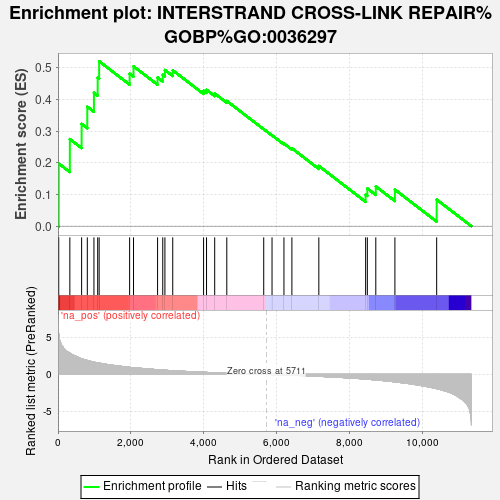

| | | Dataset | deg_ms |
| Phenotype | NoPhenotypeAvailable |
| Upregulated in class | na_pos |
| GeneSet | INTERSTRAND CROSS-LINK REPAIR%GOBP%GO:0036297 |
| Enrichment Score (ES) | 0.5208649 |
| Normalized Enrichment Score (NES) | 1.5123723 |
| Nominal p-value | 0.04415011 |
| FDR q-value | 1.0 |
| FWER p-Value | 1.0 |
Table: GSEA Results Summary

Fig 1: Enrichment plot: INTERSTRAND CROSS-LINK REPAIR%GOBP%GO:0036297
Profile of the Running ES Score & Positions of GeneSet Members on the Rank Ordered List
Fig 2: INTERSTRAND CROSS-LINK REPAIR%GOBP%GO:0036297: Random ES distribution
Gene set null distribution of ES for INTERSTRAND CROSS-LINK REPAIR%GOBP%GO:0036297